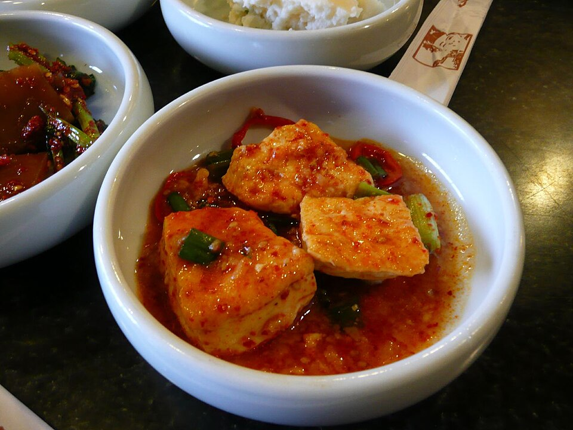
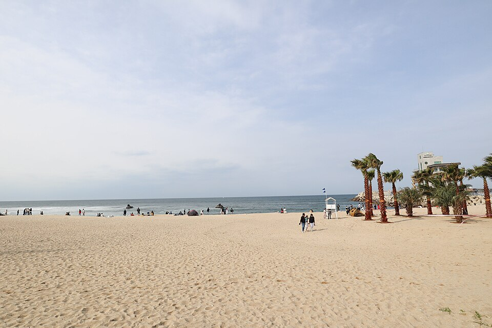

Gangwon: comida y lugares de los vídeos, desde el puerto de Daepo en Sokcho hasta Chodang en Gangneung
Guía de los restaurantes de pescado crudo, restaurantes locales, cafeterías, playas y montañas de Gangwon que aparecen en 'Real Korean Food Tour – Sokcho Beach Town Guide' y 'Weekend in Gangneung', desde pescado fresco hasta tofu blando, fideos de trigo sarraceno y dak galbi.
Gangwon: comer entre el mar y la montaña
La provincia de Gangwon es un destino de naturaleza conocido por la costa del Mar del Este, el Seoraksan y la isla de Nami. Entre sus platos más representativos están el dak galbi de Chuncheon, el cangrejo de las nieves y los fideos de pescado crudo (hoe-guksu) de Sokcho, el tofu blando de Chodang en Gangneung y los fideos de trigo sarraceno makguksu. Esta guía agrupa por zonas los restaurantes y lugares que aparecen en dos vídeos: Real Korean Food Tour – Sokcho Beach Town Guide y Weekend in Gangneung.
Puerto de Daepo, Sokcho
DaePoRee HwetJip (restaurante de pescado crudo)
📍 DaePoRee HwetJip · Naver Map · Google Maps
Restaurante de pescado crudo en el puerto de Daepo que sirve pescado fresco. Aparece en el vídeo sobre el pueblo costero de Sokcho.
MuhGuLee HwetJip (restaurante de pescado crudo)
📍 MuhGuLee HwetJip · Naver Map · Google Maps
Otro local del puerto de Daepo con pescado crudo fresco, buena opción si quieres comer junto a los barcos.
Alojamiento Bau-Haus Pension
📍 Bau-Haus Pension · Naver Map · Google Maps
Alojamiento cerca del puerto de Daepo, útil si quieres pasar la noche y disfrutar con calma del puerto y sus restaurantes.
Alrededores de la playa de Sokcho

📍 Playa de Sokcho · Naver Map · Google Maps
Playa de Sokcho
La playa del pueblo que sirve de eje a buena parte del vídeo de Sokcho.
JangSu HwalUh HwetJip (restaurante de pescado vivo)
📍 JangSu HwalUh HwetJip · Naver Map · Google Maps
Restaurante de pescado crudo con pescado vivo junto a la playa de Sokcho, cómodo para comer después de pasear por la arena.
HwangGu HwalUh HwetJip (restaurante de pescado vivo)

📍 HwangGu HwalUh HwetJip · Naver Map · Google Maps
Otro restaurante de pescado crudo con pescado vivo que aparece en el vídeo de Sokcho.
Brotherhood Coffee
📍 Brotherhood Coffee · Naver Map · Google Maps
Cafetería junto a la playa de Sokcho, un lugar sencillo para tomar un café después de una comida de marisco.
Tienda de tanghulu de Sokcho
📍 Tanghulu de Sokcho · Naver Map · Google Maps
Tienda que vende tanghulu, fruta fresca cubierta de una capa dura de azúcar. Aparece como un tentempié para comer mientras paseas.
Más comidas en Sokcho
DanChun MyunOak (restaurante de fideos fríos)

📍 DanChun MyunOak · Naver Map · Google Maps
Lugar para tomar naengmyeon, fideos fríos coreanos, que supone un buen cambio entre comidas de pescado crudo.
YoungBin BanJeom (restaurante chino)
📍 YoungBin BanJeom · Naver Map · Google Maps
Restaurante de cocina coreano-china que sirve platos como el jjajangmyeon, fideos con salsa de judías negras.
KongSeuhLee (restaurante de tofu)

📍 KongSeuhLee · Naver Map · Google Maps
Restaurante especializado en platos de tofu, buena opción si buscas algo suave.
KongGaNeh (restaurante de sopa de bolitas de patata)
📍 KongGaNeh · Naver Map · Google Maps
Sirve gamja ongsimi, una sopa al estilo de Gangwon con pequeñas bolitas de patata parecidas a los ñoquis.
YeonTan Bul SaengGuYi (restaurante de carne a la brasa)
📍 YeonTan Bul SaengGuYi · Naver Map · Google Maps
Local de barbacoa donde se asa cerdo sobre carbón de briquetas yeontan, una buena elección si prefieres carne en lugar de marisco.
Naturaleza y lugares de interés en Sokcho, Yangyang y Goseong
Seoraksan (Parque Nacional Seoraksan)

📍 Seoraksan · Naver Map · Google Maps
La montaña más conocida de Gangwon, protegida como parque nacional.
Lago Yeongnangho

📍 Lago Yeongnangho · Naver Map · Google Maps
Lago en Sokcho con un paisaje más tranquilo que el mar abierto.
Balneario Cheoksan Hot Spring Resort
📍 Balneario Cheoksan Hot Spring Resort · Naver Map · Google Maps
Balneario de aguas termales minerales, práctico para relajarte después de una excursión o de un día junto a la costa.
Playa de surf de Yangyang
📍 Playa de surf de Yangyang · Naver Map · Google Maps
Playa de Yangyang conocida por el surf.
Observatorio de la Unificación de Goseong

📍 Observatorio de la Unificación de Goseong · Naver Map · Google Maps
Torre del observatorio de la unificación en Goseong.
Tienda de recuerdos Asian Highway
📍 Tienda de recuerdos Asian Highway · Naver Map · Google Maps
Tienda de recuerdos que aparece en el vídeo, una opción para llevarse algún souvenir.
Un fin de semana en Gangneung
Chodang Sundubu

📍 Chodang Sundubu · Naver Map · Google Maps
Lugar para probar sundubu, el tofu blando por el que es conocida Gangneung. Aparece en el vídeo de Weekend in Gangneung.
Soon Tofu Gelato
📍 Soon Tofu Gelato · Naver Map · Google Maps
Tienda que elabora helado a base de tofu blando, una parada natural para el postre después de comer sundubu.
Chodang Coffee Jeongmiso
📍 Chodang Coffee Jeongmiso · Naver Map · Google Maps
Cafetería en la zona de Chodang.
Chodang Whale Roasting Cafe
📍 Chodang Whale Roasting Cafe · Naver Map · Google Maps
Otra cafetería de Chodang, en este caso con tostadero de café, también presentada en el vídeo.
Gyeongpo Makguksu

📍 Gyeongpo Makguksu · Naver Map · Google Maps
Restaurante que sirve makguksu, fideos de trigo sarraceno.
Chuncheon Dak Galbi (Gangneung)

📍 Chuncheon Dak Galbi · Naver Map · Google Maps
Lugar en Gangneung para probar el dak galbi al estilo de Chuncheon, pollo picante salteado.
Playa de Anmok

📍 Playa de Anmok · Naver Map · Google Maps
Playa de Gangneung que resulta ideal para descansar junto al agua.
Samyang Roundhill
📍 Samyang Roundhill · Naver Map · Google Maps
Granja en lo alto de una montaña, con paisajes de altura que contrastan con la costa.
Consejos de ruta
Conviene tratar Sokcho y Gangneung como dos bases separadas. En Sokcho, combina los restaurantes del puerto de Daepo con una estancia en Bau-Haus Pension y, al día siguiente, dedica tiempo a los restaurantes y la cafetería de la playa de Sokcho y al lago Yeongnangho antes de dirigirte al Seoraksan o al balneario Cheoksan. La playa de surf de Yangyang encaja de forma natural en el trayecto entre Sokcho y Gangneung, mientras que el Observatorio de la Unificación de Goseong, al norte, es más fácil de visitar como excursión aparte. En Gangneung, agrupa el Chodang Sundubu, el Soon Tofu Gelato y las dos cafeterías de Chodang, y completa las demás comidas con la playa de Anmok, el Gyeongpo Makguksu y el dak galbi. Samyang Roundhill está en lo alto de una montaña, así que reserva tiempo suficiente para el desplazamiento.
Lugares de los videos
- DaePoRee HwetJip (restaurante de pescado crudo) (대포리횟집) Pescado crudo fresco en el puerto de Daepo Naver Map Google Maps
- MuhGuLee HwetJip (restaurante de pescado crudo) (머구리횟집) Pescado crudo fresco en el puerto de Daepo Naver Map Google Maps
- Bau-Haus Pension (바우하우스 펜션) Alojamiento cerca del puerto de Daepo Naver Map Google Maps
- HwangGu HwalUh HwetJip (restaurante de pescado vivo) (황구활어횟집) Pescado crudo con pescado vivo Naver Map Google Maps
- JangSu HwalUh HwetJip (restaurante de pescado vivo) (장수활어횟집) Pescado crudo con pescado vivo junto a la playa de Sokcho Naver Map Google Maps
- Brotherhood Coffee (브라더후드 커피) Cafetería en la playa de Sokcho Naver Map Google Maps
- DanChun MyunOak (restaurante de fideos fríos) (단천면옥) Fideos fríos Naver Map Google Maps
- YoungBin BanJeom (restaurante chino) (영빈반점) Cocina coreano-china, jjajangmyeon Naver Map Google Maps
- KongSeuhLee (restaurante de tofu) (콩서리) Platos de tofu Naver Map Google Maps
- KongGaNeh (restaurante de sopa de bolitas de patata) (공가내) Sopa de bolitas de patata parecidas a los ñoquis Naver Map Google Maps
- YeonTan Bul SaengGuYi (restaurante de carne a la brasa) (연탄불생구이 속초맛집) Cerdo a la brasa sobre carbón de briquetas yeontan Naver Map Google Maps
- Tanghulu de Sokcho (탕후루 (속초)) Fruta confitada fresca Naver Map Google Maps
- Playa de Sokcho (속초해수욕장) Playa Naver Map Google Maps
- Playa de surf de Yangyang (양양 서핑 해변) Playa de surf Naver Map Google Maps
- Observatorio de la Unificación de Goseong (고성 통일전망타워) Observatorio de la unificación Naver Map Google Maps
- Seoraksan (Parque Nacional Seoraksan) (설악산) Parque nacional Naver Map Google Maps
- Lago Yeongnangho (영랑호) Lago en Sokcho Naver Map Google Maps
- Balneario Cheoksan Hot Spring Resort (척산온천휴양촌) Balneario de aguas termales minerales Naver Map Google Maps
- Tienda de recuerdos Asian Highway (아시안하이웨이 기념품샵) Tienda de recuerdos Naver Map Google Maps
- Samyang Roundhill (삼양라운드힐) Granja en la cima de una montaña Naver Map Google Maps
- Gyeongpo Makguksu (경포막국수) Makguksu (fideos de trigo sarraceno) Naver Map Google Maps
- Chodang Coffee Jeongmiso (초당커피정미소) Cafetería Naver Map Google Maps
- Chodang Whale Roasting Cafe (초당 고래 로스팅 카페) Cafetería Naver Map Google Maps
- Playa de Anmok (안목해변) Playa Naver Map Google Maps
- Chodang Sundubu (초당순두부) Tofu blando (sundubu) Naver Map Google Maps
- Soon Tofu Gelato (순두부젤라또) Helado de tofu blando Naver Map Google Maps
- Chuncheon Dak Galbi (Gangneung) (춘천닭갈비 (강릉)) Dak galbi (pollo picante salteado) Naver Map Google Maps
Ubicaciones y horarios pueden cambiar: consulta el mapa antes de ir.
Vídeos relacionados


Más artículos
- Seúl en vídeo: comida y lugares de vídeos de viaje recientes
- Gyeonggi e Incheon: restaurantes y lugares de los vídeos, de Chinatown de Incheon a la Fortaleza de Hwaseong
- Lugares de Seúl vistos en la tele: Lotte World Tower a 541 m y el Museo Memorial de la Guerra de Corea
- Jeonnam en pantalla: Teleférico marítimo de Yeosu e isla Odongdo
- Guía de comida de Jeollanam-do: cangrejo de Yeosu, mariscos y banchan de Mokpo y comida de Gwangju vista en programas coreanos de gastronomía
- Guía de comida callejera y mercados de Seúl: qué comer en el mercado Gwangjang, el mercado de pescado Noryangjin y más (según vídeos de tours gastronómicos)